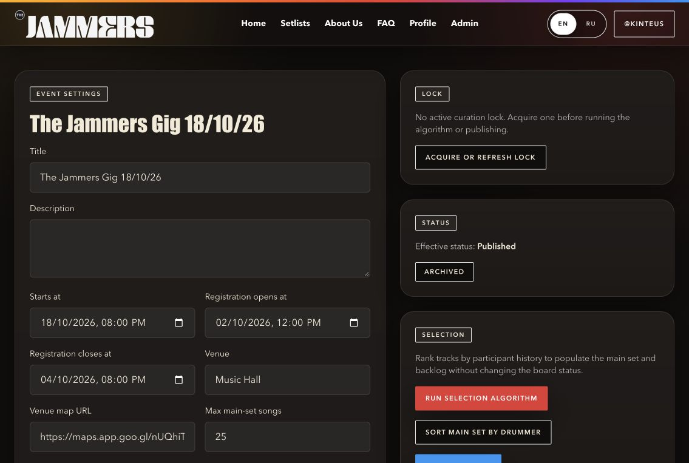
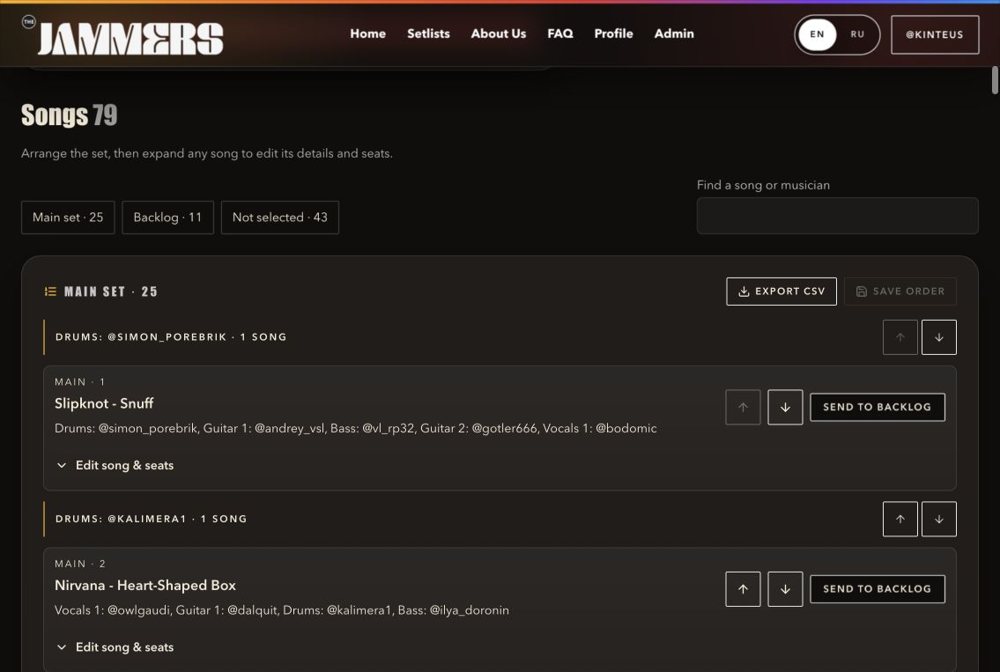
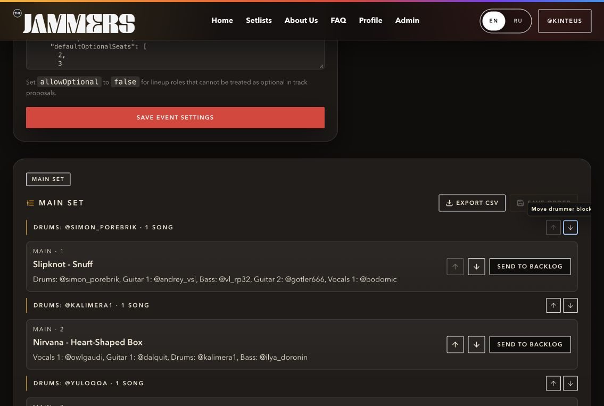
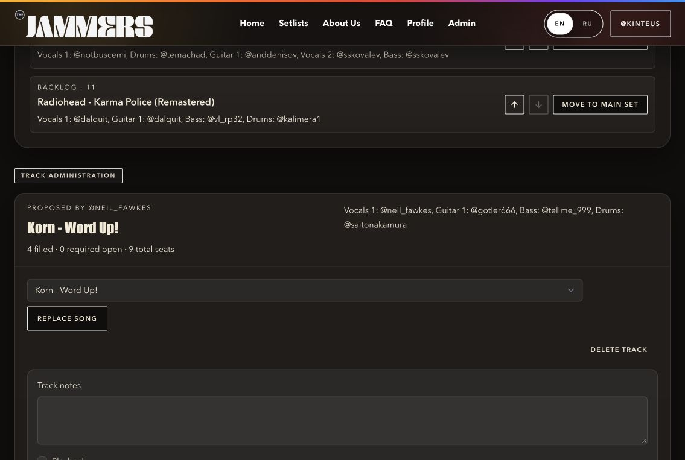
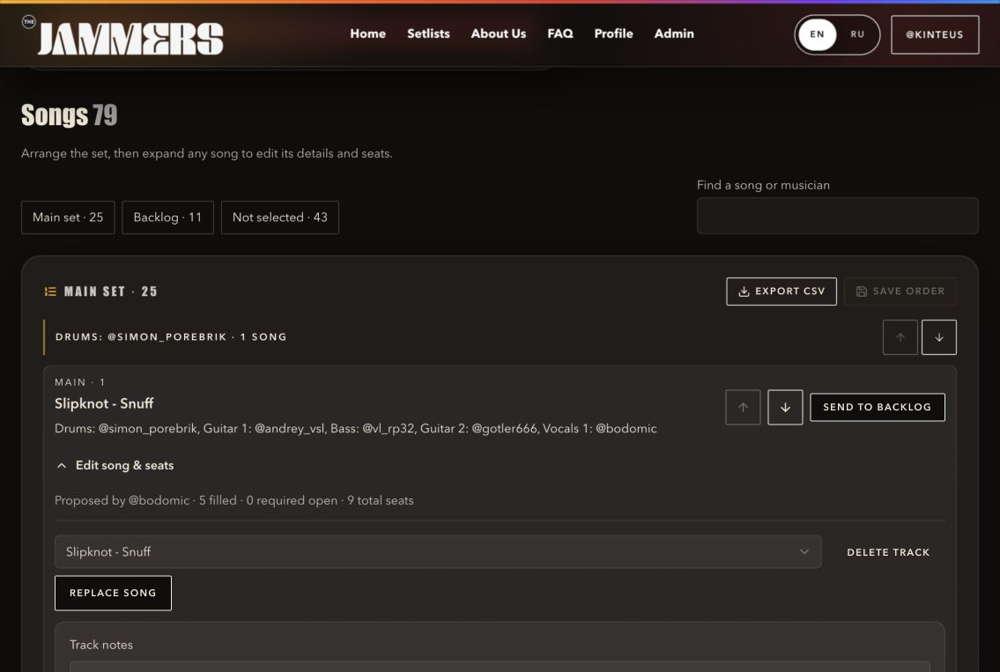
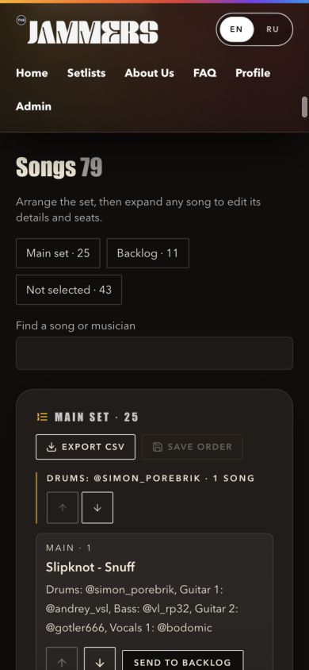

5 October 2026 · Scope: local event admin for The Jammers Gig 18/10/26. Goal: manage song order, metadata and participants from one place. Evidence: current browser captures, rendered DOM, implementation review and component tests.
Result: one song workspace with 79 unique rows: 25 Main set, 11 Backlog and 43 Not selected. Existing server actions and curation rules remain in place.
Before: a long event settings form led the page, with song management below it and no direct shortcut. The form labels and existing dark design were clear, but frequent curation required scrolling past configuration.
After: a Manage songs shortcut, section links with counts, and labeled song/artist/proposer/musician search. No-match feedback explains the result. Search disables ordering to avoid ambiguous moves in a partial list; export retains the entire draft main set.


Before: setlist rows offered ordering, drummer blocks, section moves and CSV, while a second distant list offered replacement, notes, flags, optional seats, assignments, clearing and deletion. Admins had to find the same song again in a different order. The second list's replacement selector lacked an accessible name, and collapsed editors eagerly mounted their catalog and seat controls.
After: each song appears once. Edit song & seats expands the same row; all former functions remain available. Not-selected songs stay editable. Main-set ordering still uses an explicit save; backlog ordering still saves immediately. Local drafts can be discarded, failed saves retain the main-set draft, and editing/section moves in that stack are disabled while its order is unsaved. Catalog/user options are shared, and forms mount on first expansion, staying mounted afterwards to preserve unsaved input.



The 390px viewport rendered without horizontal overflow, including the expanded editor. Song titles wrap, assignment controls fit narrow rows, reorder buttons are larger, and section anchors clear the taller mobile header. Native disclosures retain keyboard behavior, an explicit chevron shows expansion, and the replacement selector has an accessible name.
